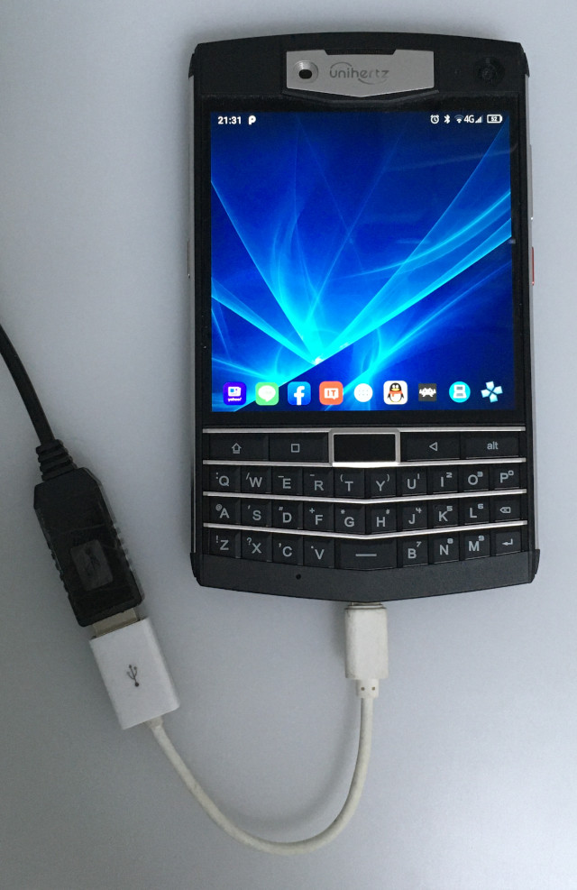

Steward
分享是一種喜悅、更是一種幸福
手機 - Unihertz Titan (TEE-EMMC) - 安裝USB Prolific PL2303驅動程式(Kernel 4.4.146)
步驟如下：
1. 接上PL2303

2. Termux
# wget https://github.com/steward-fu/website/releases/download/cosmo/v25_pl2303_ko.zip
# unzip v25_pl2303_ko.zip
# cd ko
# insmod usbserial.ko
# insmod pl2303.ko
# dmesg
[149009.515061] (0)[25055:kworker/0:2]usb 1-1: usb_set_device_state 5->5
[149009.515172] (0)[25055:kworker/0:2]usb 1-1: usb_set_device_state 5->6
[149009.530906] (0)[25055:kworker/0:2]usb 1-1: usb_get_descriptor type=1 sz=18
[149009.531309] (0)[25055:kworker/0:2]usb 1-1: USB v67b:p2303
[149009.531349] (0)[25055:kworker/0:2]usb 1-1: usb_get_descriptor type=2 sz=9
[149009.531697] (0)[25055:kworker/0:2]usb 1-1: usb_get_descriptor type=2 sz=39
[149009.533420] (0)[25055:kworker/0:2]usb 1-1: usb_set_device_state 6->7
[149009.533756] (0)[25055:kworker/0:2]pl2303 1-1:1.0: pl2303 converter detected
[149009.534878] (0)[25055:kworker/0:2]usb 1-1: pl2303 converter now attached to ttyUSB0
# lsusb
Bus 001 Device 003: ID 067b:2303
Bus 001 Device 001: ID 1d6b:0002
Bus 002 Device 001: ID 1d6b:0003
# ls /dev/ttyUSB*
/dev/ttyUSB0